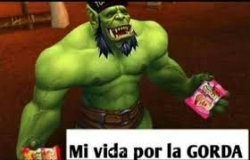

Soy una estudiante de ultimo año de bachillerato, que le gusta mucho lo que es el diseño grafico, la musica, el anime, y cortar orejas como el apostol pedro xd
-Me gusta mucho seguir casos criminales que no han sido resueltos para ver si puedo hacerlos sin cometer los mismo errores, casos paranormales y dibujar
-Me gustaria aprender mas sobre lo que es la creación y diseño de paginas web para poder meterme de lleno en esta area.
Soy fan del cantante Tirone José Gonzales , mejor conocido como "Canserbero", Juego al World of Warcraft, mi comida favorita son los tallarines con tuco, y mi serie favorita es "En donde rezan los pecadores"

| Año 2026 | Casi me atropella un camión |
| Año 2024 | Empecé programación |